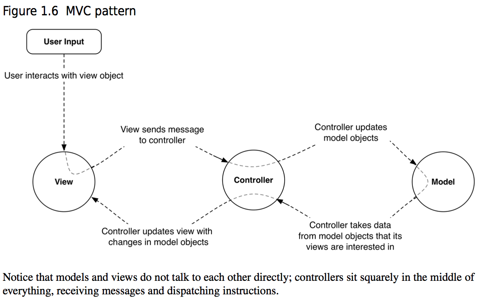
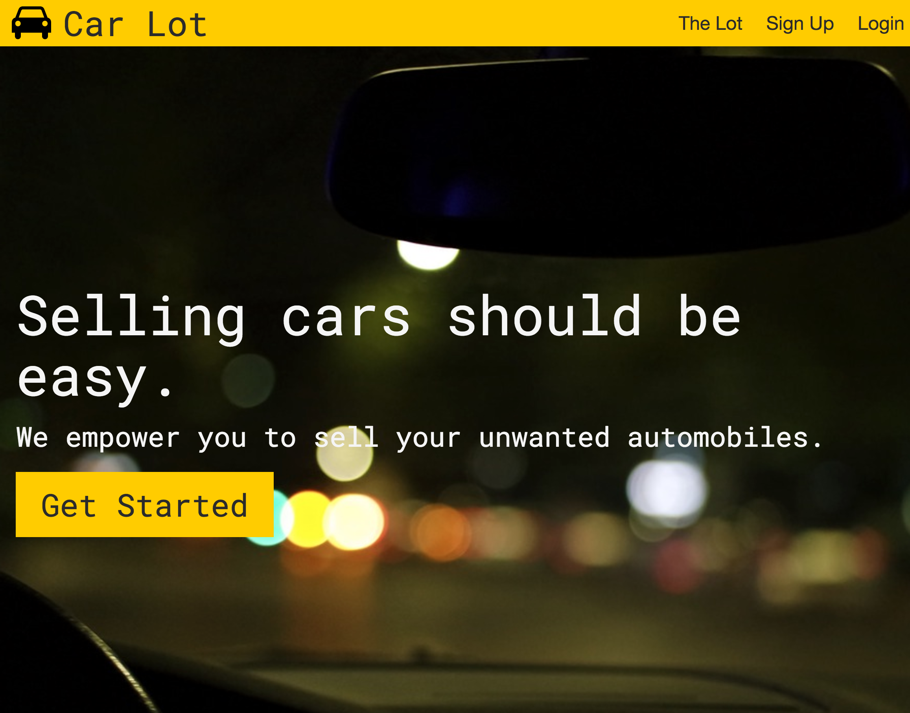
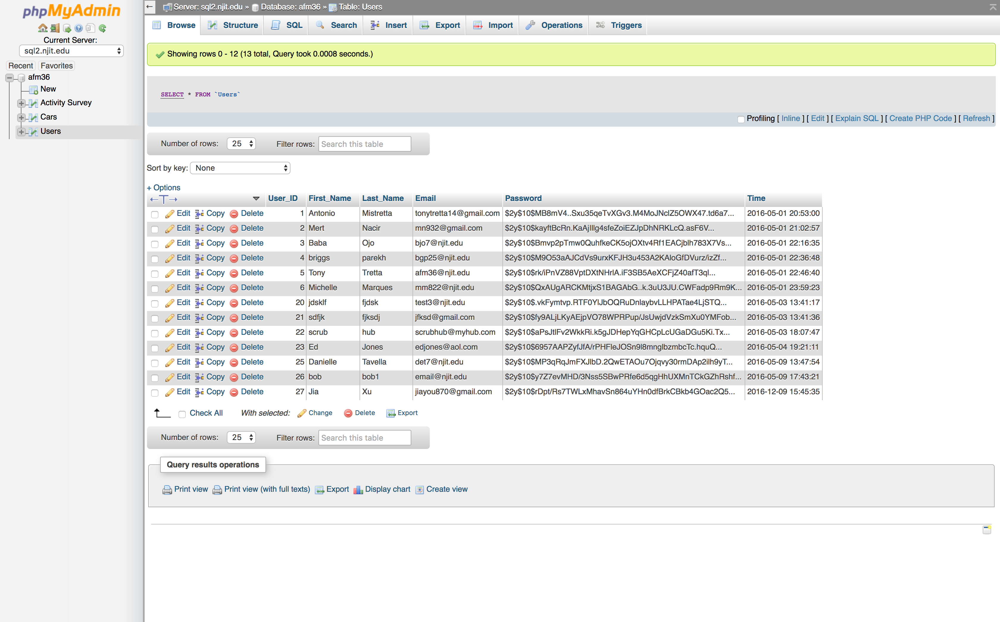

Car Lot
Building a website with SQL.
The Challenge
As apart of a web development course at NJIT each student had to design an online system using a simple database. In the class we were learning to use MySQL as my school provides partitioned storage for tables. Being new to this technology, MySQL, PHP, and databases altogether, I had to break up my learning into managable pieces.
The other challenege was finding an application to build. My professor had made a few suggestions however it was encouraged to make something that interets me. The app just had to follow a few guidelines:
- Follow MVC format
- Have a form of login with a hashed password
- Be a system people would actually use
The rest was up to pure implementation and creativity.
The Solution
I started by breaking up my application into a Model-View-Controller (MVC) which allowed me to compartmentalize my code and design process. Reading up on what MVC is and how it is implemented was the most useful way to learn about this.
Source: iOS Programming 6th Edition, Big Nerd Ranch
What came next was finding an idea. I decided to create an online board for people to post their cars that they wish to advertise. This was relevant to me at the time because my father was in the process of helping me find my first car.
The front-end of the project was very easy and quick. After creating a simple logo and design style I created a quick mockup for the site.
Landing page for Car Lot
From there I just needed to create a database, provided from my school, and connect it to my site using PHP. The database was organized into two tables, one for users and one for cars. The tables were linked using the userID, that was auto assigned upon account creation, and the carID.
Notice that the passwords are hashed
One of the last things to add was a way to add a car. I decided to use VPNs as it is a standard way to identify what a car is. Thankfully Edmunds has an API that allows me to retreve an object based off of a VPN.
Closing Thoughts
This project was very empowering in my capacity to learn quickly and use systems that others create to speed things along. If I were to change anything in this project I would update the scalability of this project. If many more cars were added a new way to filter what you want and don't want would make the process much easier and faster.